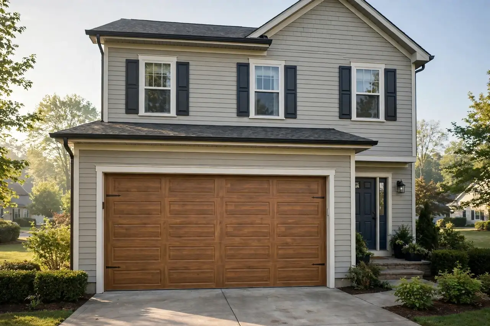

Garage door panel replacement costs explained: national guide ranges
What does replacing one garage door panel cost? No Zion price guide exists, so this post reports dated national guide ranges only, each labeled with its source, date, and scope.

A dented, cracked, or rotted section of a garage door raises a practical question: replace the one section, or replace the whole door? The answer depends on the damage, the door's age and condition, and whether a matching section is available.
No Zion panel price guide was found in any source read, and this business publishes no firm pricing. Every dollar figure in this post is therefore a national guide range, not a quote and not this business's price, with its source, date, and scope stated. Figures whose scope was unclear, or that came only from snippets and secondhand citations, were dropped.
What national guides say panel replacement costs
Two national guides read in full publish panel replacement ranges. HomeGuide (spring replacement guide, updated October 27, 2025) gives panel replacement at $300-$900 per panel (national guide range, not a quote and not this business's price; scope: per panel, repair-table figure). This Old House (spring replacement guide, updated March 10, 2026) gives panel replacement at $440-$725 (national guide range, not a quote and not this business's price; scope: panel replacement as stated in the guide's repair table, via Homewyse).
The two ranges overlap substantially, which is reassuring as far as it goes, but they are still national guide ranges for different job mixes, not a Zion price and not a quote. A third guide's panel figure was cited three different ways by secondary sources, so it cannot be stated reliably and is left out here entirely, as the research report directs.
Minor dent repair is a different job from panel replacement. HomeGuide (updated October 27, 2025) gives minor dent repair at $100-$300 (national guide range, not a quote and not this business's price; scope: minor dents, distinct from panel replacement). A dent that has cracked the section, bent the track, or damaged the hardware is no longer a dent job.
For the service description, see garage door panel replacement in Zion, IL.
How much does panel replacement cost in national guides?
The short answer from guides read in full is $300-$900 per panel (HomeGuide, updated October 27, 2025) and $440-$725 (This Old House, updated March 10, 2026), each a national guide range, not a quote and not this business's price. The longer answer is that the number of sections, the door material, the section size, and whether hardware or track work is needed alongside all move the job within and beyond those bands.
A single bottom section on a standard steel door is the simplest case in the guides' framing. Multiple sections, a larger or heavier door, a discontinued profile, or damage that extends into tracks and hardware all add scope. That is why the guides publish ranges rather than single figures, and why no single figure is picked here.
If the door needs more than one section, compare against full-door guide ranges before deciding. Angi (replacement guide, updated September 21, 2026) gives a typical full replacement at $754-$1,707 with a national average of $1,231 (national guide range, not a quote and not this business's price; scope: typical replacement, from 15,434 verified projects). HomeGuide (updated October 27, 2025) gives door plus labor for an entire replacement at $700-$3,500 (national guide range, not a quote and not this business's price; scope: entire replacement, in a spring-guide context). This Old House (updated March 10, 2026) gives full replacement at $970-$1,580 (national guide range, not a quote and not this business's price; scope: full replacement comparison figure, via Homewyse). Housecall Pro (March 11, 2026) gives residential full installation commonly at $800-$2,500 or more (national guide range, not a quote and not this business's price; scope: full installation). Do not average the guides into a single invented figure; the spread itself is the finding.
Can I replace just one garage door panel in Zion Illinois?
Sometimes. A single section can be replaced when the damage is limited to that section, the rest of the door is sound, the tracks and hardware are undamaged, and a matching section is available for the door's profile, width, and finish. A technician can advise after seeing the door; this post makes no promise about any particular door.
Matching is the practical constraint. A replacement section needs to match the door's profile and dimensions, and older or discontinued profiles can be hard to match. Where no matching section is available, full-door replacement becomes the discussion. That matching point is general trade guidance rather than a sourced manufacturer finding, and it is stated here as guidance, not as a sourced fact.
One section is usually not enough when several sections are damaged, the door is twisted or out of square, rust or rot has spread beyond one section, or the tracks are bent. In those cases the repair scope grows past a single section, and the full-door comparison in the previous section is the right frame.
What actually drives the price of a panel
National guides point to the same drivers again and again. Understanding them helps you read any guide range honestly.
- Material. Angi (updated September 21, 2026) gives per-door replacement ranges by material (national guide range, not a quote and not this business's price; scope: per door, national): aluminum $600-$2,900, wood $900-$4,500, steel $650-$3,200, false wood or composite $650-$4,800, vinyl $800-$2,500, fiberglass $800-$2,700, and glass $2,500-$8,000. Material spans $600-$8,000 overall in that guide (national guide range, not a quote and not this business's price; scope: composite low-to-high across the material table in the same guide). A panel for a premium material door costs more than one for a standard steel door, in general terms.
- Size and configuration. Angi (updated September 21, 2026) gives per-door ranges by size (national guide range, not a quote and not this business's price; scope: per door, national): one-car $500-$3,000, two-car with one double door $800-$5,000, two-car with two single doors $1,200-$4,900, three-car with one double plus one single $1,400-$7,000, and three-car with three singles $1,700-$7,200. Larger and heavier doors need heavier sections and hardware.
- Number of sections. Each additional section adds material and labor. Two or more sections can approach the full-door comparison ranges above.
- Hardware and track damage. Impact damage often extends past the panel into rollers, hinges, brackets, and tracks. That added scope is part of the job, not an extra surprise, and it should be in the written scope.
- Labor and removal. Angi (updated September 21, 2026) gives installation labor priced separately at $200-$500, averaging $350 (national guide range, not a quote and not this business's price; scope: installation labor where priced separately), and old-door removal at $50-$200 where charged separately (national guide range, not a quote and not this business's price; scope: removal where charged separately). HomeGuide (insulated door guide, updated October 15, 2025) gives removal and disposal at $50-$250 (national guide range, not a quote and not this business's price; scope: removal and disposal). Most installers bundle labor; the guides note that final cost depends on location, workers, complexity, and features.
- Structural discoveries. Angi (updated September 21, 2026) gives structural repairs discovered during installation at $155-$380 (national guide range, not a quote and not this business's price; scope: repair-cost range quoted inside the replacement guide). Rot, framing damage, or a damaged header found once work starts changes the scope.
Why do panel guide ranges vary so much?
Panel guide ranges vary because the guides measure different job mixes. A per-panel repair-table figure, a full replacement comparison, a material-specific band, and a size-specific band are not the same measurement, and they should not be compared as if they were. The report's conflicts register records the panel disagreement directly and directs that only the two read-in-full figures be reported.
Geography is another reason ranges differ, and another reason no Zion figure is stated here. National guides blend jobs from across the country. A Chicago-area panel figure seen only in snippets was left out of this post because it was not read in full and cannot be presented as a Zion figure in any case.
The practical lesson is to compare like with like: per-panel against per-panel, full-door against full-door, and installed totals against installed totals, with the source and date attached. A range without a source, date, and scope tells you very little.
What the panel replacement process involves
No time promise is made here. What the process involves, in general terms, is: inspection of the damaged section and the rest of the door, tracks, and hardware; sourcing a matching section where one is available; safe handling of the door and its tensioned parts; removal of the damaged section; fitting and fastening the replacement; checking alignment, balance, and hardware; and testing full travel with the safety reverse and sensors.
Whether the section is available, whether hardware or track work is needed, and the door's size and condition all shape how involved the job is. If a matching section has to be sourced, that step governs the timeline more than the fitting itself. Ask what the process involves for your door before work begins, and get the scope in writing.
Whether a City of Zion permit is required for garage-door work, and any fee, was not confirmed on a City source. Contact the City of Zion Building Department, 2828 Sheridan Road, (847) 746-4018, before work begins.
Panel replacement vs. a new door
Panel replacement fits when damage is limited, the door is otherwise sound, and a matching section is available. A new door fits when damage is widespread, the door is old and worn across several sections, no matching section is available, or the door's insulation, safety features, or appearance no longer suit the home.
Compare the two options on scope, not on a single number. Add up the panel work, any hardware and track work, and the door's remaining condition on one side; compare the full-door guide ranges above, with material and size in mind, on the other. A door that needs two sections plus track work may be closer to a new door than it first looks.
For the new-door side of the decision, see garage door installation in Zion, IL, which covers installation and replacement on one page. For homes in the older grid, including garage doors in Central Zion, IL, door age and condition often tip the balance, since many original doors there are decades old, where they survive.
What to watch out for
- A price without a scope. A single figure with no statement of sections, material, hardware, labor, or removal cannot be compared with anything. Ask for the scope in writing.
- A mismatched section. A section that does not match the door's profile, width, or finish will show and may not seal or run correctly. Confirm matching before work begins.
- Hidden track and hardware damage. Impact damage often extends past the panel. The tracks, rollers, hinges, and brackets should be inspected as part of the same job.
- Spring and cable condition. A heavy or unbalanced door after panel work points to spring or cable issues. Garage door spring replacement in Zion, IL and garage door off-track repair in Zion, IL cover those systems.
- Skipping the safety tests. After any panel work, the door should run full travel with the safety reverse and sensors tested before it is left in service.
When to call a professional
Call a professional when a panel is cracked, bent, rusted through, or rotted, when the door runs crooked or binds after damage, when tracks or hardware look bent, or when you are unsure whether one section or a full door is the right call. Do not run a door with a cracked section and bent hardware; the damage can spread to the tracks and opener.
Milwaukee Garage Doors Inc is open 24 hours, every day. Call (224) 842-7761 and describe the damage and the door.
Frequently Asked Questions
What do national guides say panel replacement costs?
HomeGuide (updated October 27, 2025) gives $300-$900 per panel, and This Old House (updated March 10, 2026) gives $440-$725; each figure is a national guide range, not a quote and not this business's price. No Zion panel price was found in any source read.
Can I replace just one garage door panel in Zion Illinois?
Sometimes, when the damage is limited to one section, the rest of the door is sound, the tracks and hardware are undamaged, and a matching section is available for the door's profile, width, and finish. A technician can advise after seeing the door.
Why do panel guide ranges vary so much?
The guides measure different job mixes: per-panel figures, full-door comparisons, material bands, and size bands are not the same measurement. National guides also blend jobs from across the country, and no Zion figure exists to narrow them. Compare like with like, with source, date, and scope attached.
What does the panel replacement process involve?
Inspection of the damaged section, door, tracks, and hardware; sourcing a matching section where available; safe handling of tensioned parts; removal and fitting; alignment, balance, and hardware checks; and full-travel testing with the safety reverse and sensors. No time promise is made here.
Can I drive my car with a damaged garage door panel?
Do not run a door with a cracked section, bent tracks, or damaged hardware, and do not drive through a door that binds, hangs crooked, or will not close fully. The damage can spread to the tracks and opener. Call a technician and describe the damage first.
Get help with Garage Doors in Zion
If a panel is damaged and you are weighing one section against a new door, call Milwaukee Garage Doors Inc at (224) 842-7761. We are open 24 hours, every day.
Read about garage door panel replacement in Zion, IL, garage door installation in Zion, IL, and garage doors in Central Zion, IL, or go to contact Milwaukee Garage Doors Inc.